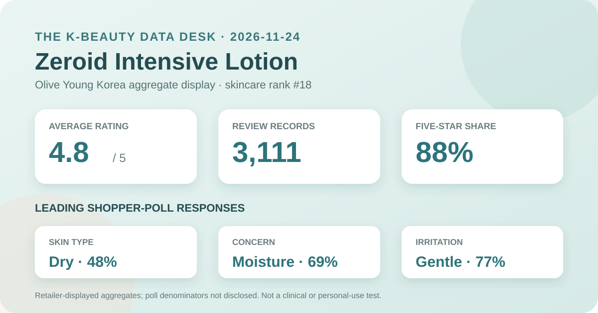
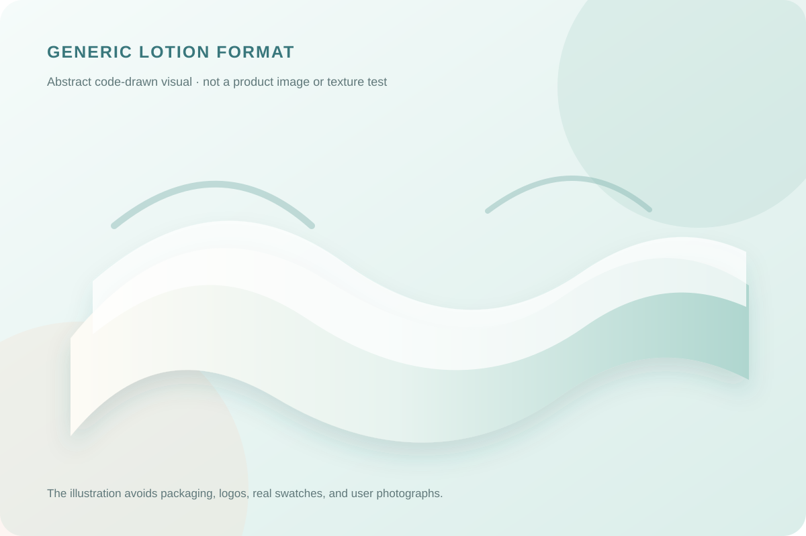

Data captured November 24, 2026. Olive Young Korea displayed “제로이드 인텐시브 로션 300ml 기획 (+액막이 키링).” This article uses “Zeroid Intensive Lotion” as a concise English label. It relies only on the live ranking, product identity, aggregate rating, displayed star shares, and shopper polls. It does not copy or translate individual reviews, names, profiles, or photographs, and it makes no claim of firsthand use.

The short version: Zeroid Intensive Lotion appeared at number 18 in the captured skincare sales ranking. The ranking and detail titles agreed, while the product header and official review view both showed 4.8 out of 5 from 3,111 records. Five-star ratings represented 88% of the displayed distribution. Dry skin led the skin-type poll at 48%, moisture led the concern panel at 69%, and gentle led the irritation panel at 77%. These are storefront signals, not proof that the lotion repairs a barrier, increases hydration, treats dry skin, or suits a particular person.
The official display showed 4.8 stars from 3,111 review records. That is enough volume to describe the current storefront signal with more context than a tiny launch sample: the average is high, and the visible distribution is concentrated at four and five stars. It remains observational retail feedback. It cannot isolate the lotion from expectations, discounting, routine, weather, packaging, or the reasons people chose to leave feedback.
The captured listing centered on a 300 ml lotion plan with a promotional keyring, while the review interface indicated that records could include configurations with the same contents but different volumes, packages, or gifts. The interface did not expose a verified-buyer denominator, raw rating counts, or a method for separating comments about the formula from comments about value, shipping, or presentation.
The defensible conclusion is narrow: the captured product family had a favorable aggregate rating across 3,111 linked records. That does not establish a change in skin-barrier function, water content, transepidermal water loss, redness, sensitivity, or any medical or clinical outcome, and it does not show superiority over another lotion.
The official rows showed 88% five-star, 8% four-star, 2% three-star, 0% two-star, and 1% one-star. These rounded shares total 99%, not 100%, which is a useful reminder that the interface presents rounded percentages rather than raw counts. They are directionally consistent with the 4.8 average.
A displayed zero can conceal a small underlying share after rounding, so it does not prove that no two-star ratings exist. The distribution also describes satisfaction labels rather than causes. It cannot tell us how long people used the lotion, how much they applied, what else was in their routines, or whether reviewers evaluated the same bundle under consistent conditions.
The displayed skin-type responses were 48% dry, 46% combination, and 6% oily. The rows total 100%. Dry led by only two percentage points, so the useful reading is that dry and combination labels were both strongly represented in the response sample, while oily responses formed a much smaller share.
This is sample composition rather than a product-fit score. A person selecting “combination” may still experience localized dryness, seasonal sensitivity, or an oily T-zone. The platform did not disclose the poll denominator or matched outcomes by skin type, so the percentages cannot support a claim that dry skin benefits more or that oily skin is poorly suited.
The concern panel displayed 69% moisture, 31% soothing, and 1% wrinkle or brightening. These rounded rows total 101%. Moisture was the clear leading label, but the panel is a shopper poll, not a measurement of skin water content, barrier function, transepidermal water loss, redness, wrinkle depth, or pigmentation.
No corneometer, imaging protocol, baseline, comparator, application schedule, or follow-up interval was part of the capture. The 69% moisture share is not a 69% increase in hydration, and the 31% soothing share is not a response rate for reduced inflammation or redness. The display describes how respondents categorized an impression, with an undisclosed denominator and rounding.
The irritation panel showed 77% gentle, 22% ordinary, and 1% felt irritation. The rows total 100%. The leading response is favorable, but all three rows matter. Even a small displayed irritation share confirms that an aggregate cannot promise an identical experience for everyone.
A retailer poll cannot predict stinging, contact allergy, sensitivity to a current formula, or interactions with retinoids, exfoliants, acne treatments, sunscreen, and makeup. It also does not reveal whether respondents patch-tested, how much they applied, or whether they had a compromised barrier. Follow the current label and stop use if persistent discomfort occurs rather than treating a poll as a safety guarantee.
During capture, the official review view exposed the rating, review count, star shares, and three shopper-poll panels, but it did not expose a stable retailer-generated anonymous theme summary that could be reported without relying on individual review text. Accordingly, this analysis does not infer recurring topics from the visible review feed.
That omission is deliberate. A handful of visible comments cannot stand in for all 3,111 records, and copying or translating them would add identifiable or copyrighted review material without improving the aggregate analysis. The evidence here therefore stops at the statistics the interface clearly displayed.

“Intensive Lotion” is the retailer-displayed product name. In general skincare language, a lotion is a leave-on emulsion, often positioned between lighter fluids and creams, but the category does not define viscosity, spread, absorption, residue, scent, finish, or compatibility with sunscreen and makeup. “Intensive” is a naming cue, not a measured dose or performance grade.
I did not open, dispense, spread, layer, or wear this lotion. The local visual uses translucent abstract layers to communicate a generic lotion format without reproducing the package, liquid color, or a real swatch. Actual sensory behavior depends on the current formula, amount, application method, skin condition, temperature, humidity, and surrounding routine.
The captured product title did not provide a verified active concentration, and this analysis did not independently audit the current formula. A line name cannot reveal which ingredients drive the finished product, their amounts, stability, delivery, or contribution to user experience. I therefore do not infer ceramide, lipid, humectant, occlusive, soothing-agent, or preservative content from the name.
Readers seeking current ingredient, allergen, fragrance, or regional-formula details should consult the package and the brand's current disclosure. Formula and labeling can change independently of accumulated review records, and the Korean promotional listing may not match every regional configuration.
Rank 18 describes one capture of Olive Young Korea's skincare sales list. It is not a clinical ranking or a claim that this is the eighteenth-best lotion. Advertising, inventory, discounting, bundle size, gifts, seasonality, and short-term demand can move a listing rapidly.
The captured page showed a 300 ml plan with a keyring, a ₩58,000 reference price, and a ₩37,200 promotional price. Those details can change separately from the review aggregates. Before purchase, confirm the current seller, formula, volume, bundle contents, stock, expiry information, return terms, directions, and checkout price on the live listing.
The captured official display showed 4.8 out of 5 from 3,111 records. Displayed star shares were 88% five-star, 8% four-star, 2% three-star, 0% two-star, and 1% one-star.
Dry skin led at 48%, followed closely by combination at 46% and oily at 6%. These shares describe the displayed response sample and do not prove suitability.
No. The 69% value is a shopper-poll label, not an instrument measurement, controlled comparison, or percentage increase in skin hydration.
No. The 77% aggregate cannot predict allergy, irritation, sensitivity, routine interactions, or an individual's response.
No. This article analyzes retailer-displayed aggregates only and uses brand-neutral vector artwork rather than a product or user photograph.
Source: Olive Young Korea product listing and official aggregate review statistics, captured November 24, 2026. Open the source product page.
Published by The K-Beauty Data Desk. The source does not independently verify every buyer's identity, and this page is an editorial analysis of retailer-displayed aggregates—not medical advice or a substitute for the current product label.
← All reviews · Review-volume rankings · Skin-poll explorer · Methodology